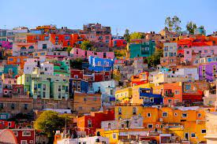
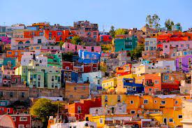

GTO is a state in central Mexico, the capital of which is also called Guanajuato. Guanajuato is known for silver mining, Spanish colonial architecture, significance in Mexican independence, as well as El Museo de las Momias. (The Museum of the Mummies)